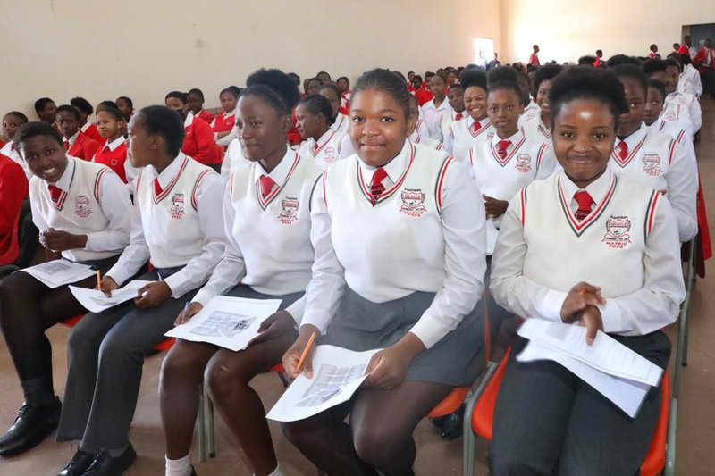

About Ponelopele Secondary School
“Vumundzuku i bya Hina” — Tsonga for “The Future is Ours”
Ponelopele Secondary School is an award-winning, technology-infused public high school situated in Kaalfontein, Midrand, in the Gauteng Province of South Africa. Founded in March 2006 and officially opened to learners in March 2007, the institution represents a landmark partnership between Oracle Corporation South Africa and the Gauteng Department of Education (GDE).
Built upon an architectural master plan designed to inspire, the school was created with the mandate of providing township learners from Kaalfontein, Ebony Park, Ivory Park, and surrounding Midrand communities with world-class facilities, advanced science laboratories, cutting-edge computer infrastructure, and uncompromising academic standards.
Under the dedicated leadership of Principal Mr. Navhatakali Edward Netshianzwane, our school has continually produced top matriculant pass rates, science olympiad winners, and university-ready scholars.
| Key Attribute | School Detail & Policy |
|---|---|
| Official Name | Ponelopele Secondary School |
| Principal | Mr. Navhatakali Edward Netshianzwane |
| School Motto | “Vumundzuku i bya Hina” (The Future is Ours) |
| Establishment Date | March 2006 (Gauteng Department of Education & Oracle Corporation SA) |
| Funding & School Fee Policy | 100% No-Fee Public School: Designated as a Section 21 Quintile 1 public school. No compulsory tuition fees are levied on parents. |
| Total Learner Enrolment | Over 1,600 co-educational learners (Grades 8 through 12). |
| Academic Specialisations | Science, Technology, Engineering, and Mathematics (STEM), Commerce, and Humanities. |
| GitHub Project Repository | https://github.com/Gunnerboy147/WEDE5020Website- |
Official School Crest & Emblem Symbolism

|
Elements of the Ponelopele Crest:
|
Educational Pillars & Class Boxes
| Class Box 1: Books & Reading | Class Box 2: Uniform & Pride | Class Box 3: Matric Laureates | Class Box 4: Labs & Heritage |
|---|---|---|---|
|
100% Textbook AllocationEvery learner receives a full textbook suite for Mathematics, Sciences, Accounting, and Languages, augmented by digital CAPS resources. |
 School Uniform PrideRed v-neck jerseys, crisp white shirts, red ties, and grey trousers/skirts worn with dignity and immaculate discipline every school day. |
Academic Trophies95.9% matric pass rate with over 66 distinctions in STEM subjects, consistently ranking among top schools in Gauteng Province. |
9 Computer LaboratoriesWorld-class computer labs and science facilities built in partnership with Oracle and the Department of Education. |


Ponelopele & Oracle Educational Partnership Documentary Video
Watch the documentary film chronicling the founding partnership between Oracle South Africa and the Gauteng Department of Education to build Ponelopele Secondary School in Kaalfontein, Midrand:
|
Direct YouTube Link: https://youtu.be/jyKVQ9xN7a0?si=UgOEv9F7InanDD18 (Opens directly in YouTube) Video Description: This documentary highlights the corporate social investment by Oracle Corporation that transformed education in Kaalfontein, providing computer labs, science facilities, and educational support to over 1,600 township learners. |
Campus Contact & Location
| Physical Address: | 29th September Street, Kaalfontein Extension 2, Midrand, Johannesburg, Gauteng, 1685 |
| Telephone: | 082 582 7953 / 011 261 1234 |
| Email Address: | info@ponelopele-oracle.edu.za |
| Principal: | Mr. Navhatakali Edward Netshianzwane |
| Official Code Repository: | https://github.com/Gunnerboy147/WEDE5020Website- |